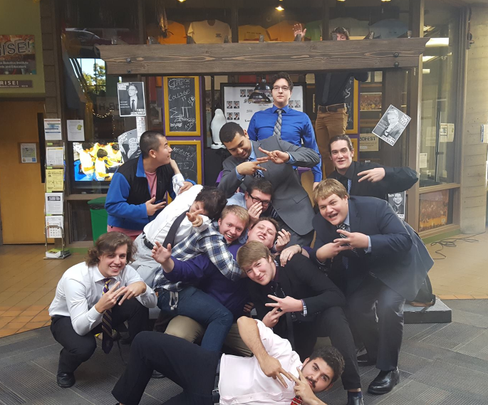

That's me. I am a huge fan video games and I also have a huge passion for making them, I like to create games by programming on Unity. Although my passion is video games, I'm also interested in programming firewalls, drones, or artificial intelligence. I'm confident in skills I'm gaining from my projects as well as the things I teach myself. I am ultimately seeking employment as part of a software development team/project.
I am a very passionate person when it comes to the things I care about and love to do. At a young age I dreamt of becoming an architect. I absolutely loved building but when I got into high school and took a CAD class, I realized I didn't like the rules and regulations of buildings. I switched to 3D modeling and discovered something I loved doing. I spent the next two years in 3D modeling classes making spaceships, gorillas, a wolf, and drones that imagined would work great for games. 3D modeling is still one of my hobbies and I like to create small games with my models. While taking those classes, I registered for an introductory course in computer science. After starting that class, I decided that was my future. The class was meant to guide kids along at a leisurely pace, but I was too interested to stay at their pace. I would go out on the internet and learn as much as I could at home, learning about things weeks before the teacher brought them up in class. The only other class the school offered was an AP computer science course. I loved it and excelled in the class and scored excellently, which helped me skip 6 credits at Lawrence Technological University.
I'm currently enrolled at Lawrence Technological University pursuing a Computer Science degree with a focus on Software Development. The game design aspect of my degree is where I invest my programming skills.
 I'm part of a fraternity called Sigma Pi who have helped me become the person I am today. I'm more confident in my skills and I am able to be who I am while pursuing my goals.
Currently job hunting and applying to said jobs. I'm looking for jobs to help achieve my ultimate goal to become a Computer Programming Project Manager/Leader for Applications (and maybe one day own my own video game company.)
Programming: C++ C# Java | HTML CSS Javascript
I've learned some serverside programming and learning more.
Huge amount of Game Design skills: Game Designing, Game Design Concepting, Level Design, Programming C#, Unity, Gamemaker.